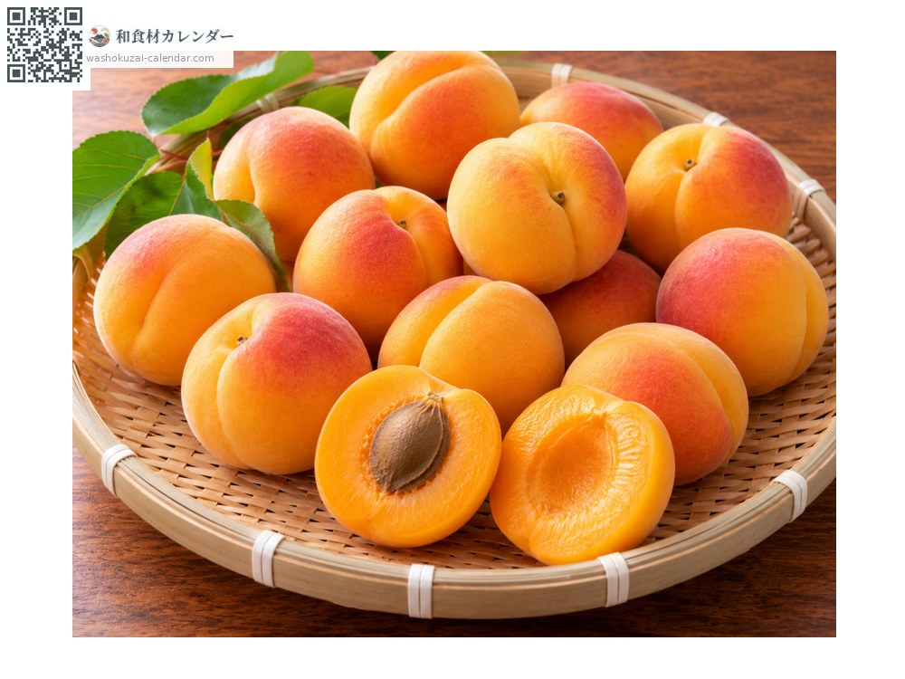
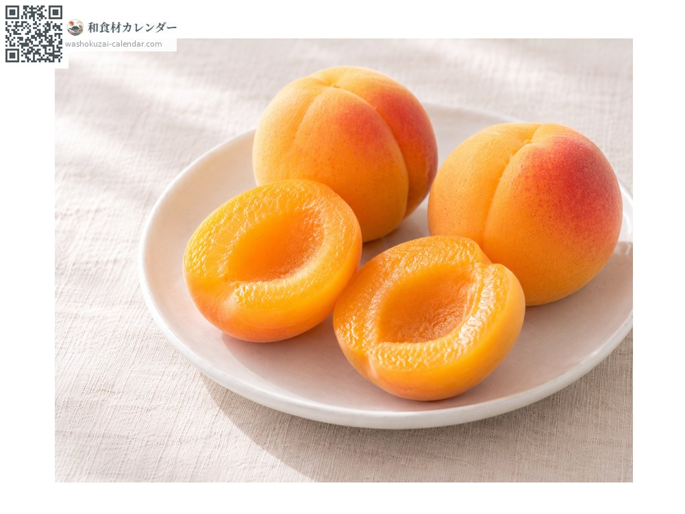
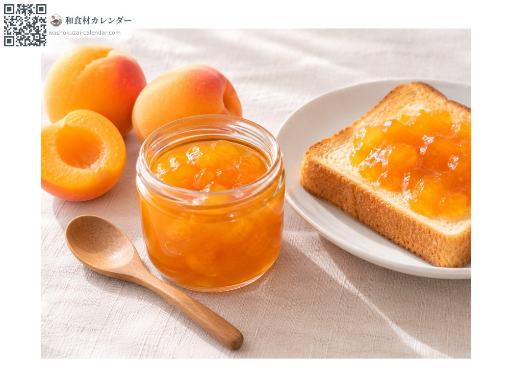
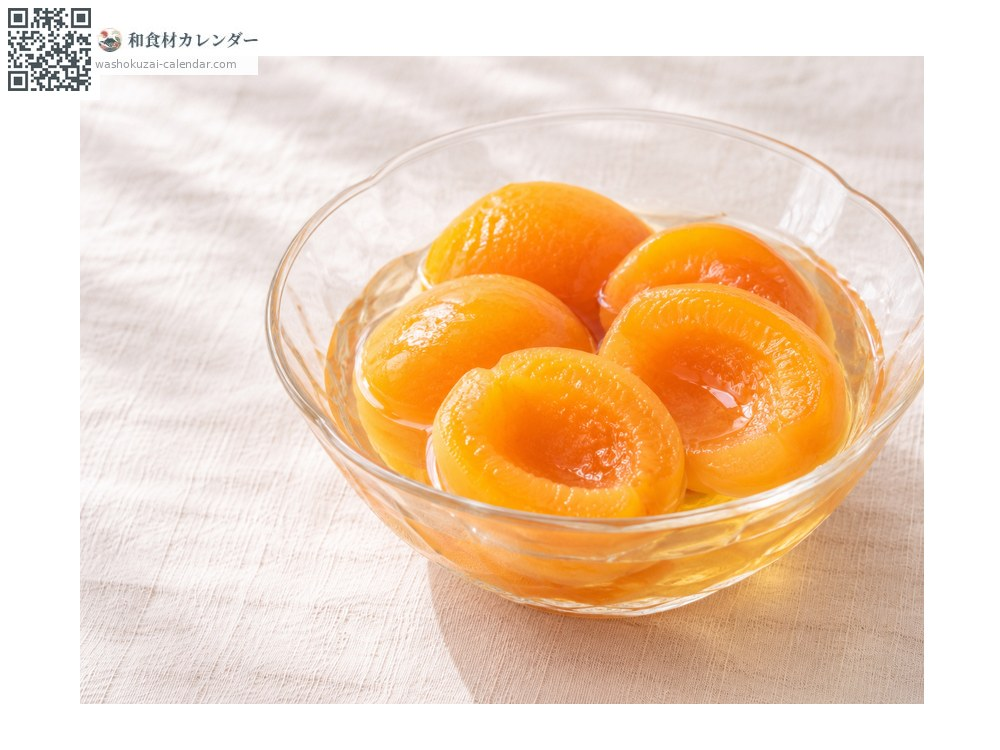
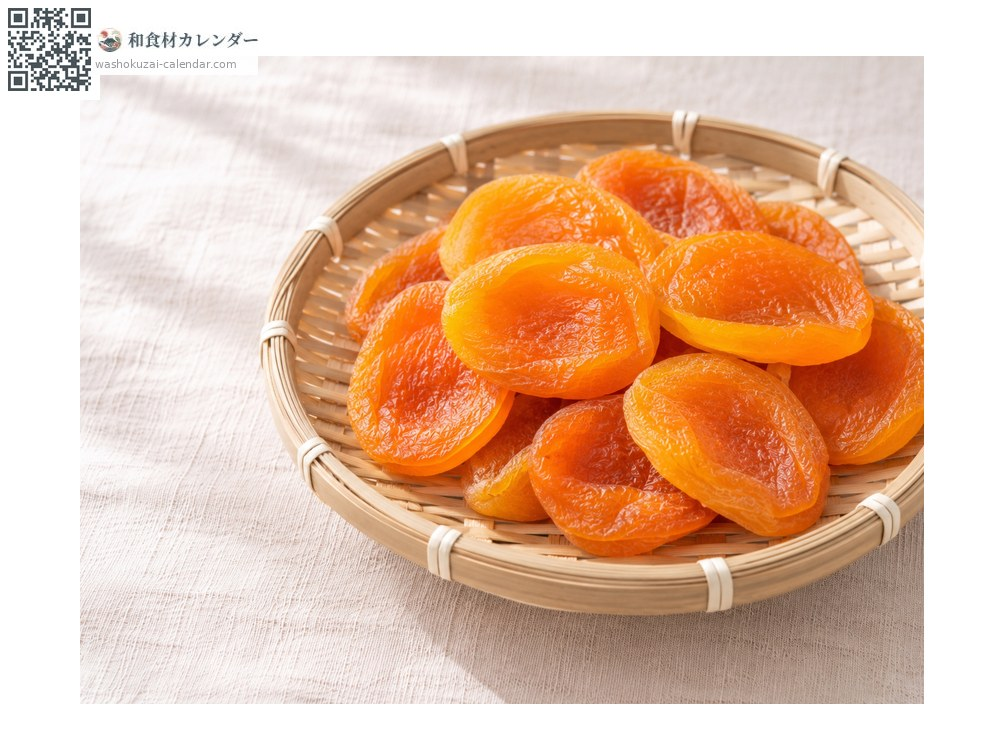

ผลไม้
แอปริคอต
アンズ あんず anzu
ชื่ออื่นanzu
อร่อยที่สุดในเดือน มิ.ย., ก.ค.

ช่วงที่อร่อยที่สุด
ม.ค.
ก.พ.
มี.ค.
เม.ย.
พ.ค.
มิ.ย.
ก.ค.
ส.ค.
ก.ย.
ต.ค.
พ.ย.
ธ.ค.
ช่วงอร่อยที่สุดมีจำหน่าย
วิธีปรุง

ทานสด
ผลสุกกินได้ทั้งเปลือก รสหวานอมเปรี้ยว

แยม
แกะเมล็ดออกแล้วเคี่ยวกับน้ำตาล สีสดสวย

ต้มในน้ำเชื่อม
ผ่าครึ่งแล้วต้มในน้ำเชื่อมใส

แอปริคอตแห้ง
ผ่าครึ่งแล้วตากแดดหรืออบไฟอ่อน
วิธีเลือก
สีส้มทั่วทั้งผล มีขนอ่อนนุ่ม กลิ่นหอม ผลที่ยังมีสีเขียวจะเปรี้ยวจัด
วิธีเก็บรักษา
เก็บได้ไม่นาน ควรแช่เย็นและรับประทานภายใน 2-3 วัน ที่กินไม่หมดให้นำไปแปรรูป
แหล่งผลิตหลัก
เกร็ดน่ารู้
มีถิ่นกำเนิดในจีนและเข้ามาญี่ปุ่นตั้งแต่สมัยโบราณ แอปริคอตสดช้ำง่ายจึงไม่ค่อยวางขายนอกแหล่งปลูก ย่านโมริในเมืองจิกุมะ จังหวัดนางาโนะ มีชื่อเสียงในฐานะ "หมู่บ้านแอปริคอต" เนื้อในเมล็ดคือที่มาของกลิ่นหอมในขนมอันนินโดฟุ